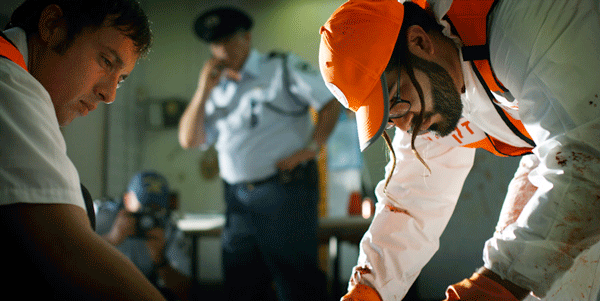

-
Omer Fast at Postmasters
by Gabriel Hainer Evansohn February 11, 2010

I don’t deal directly with reality but with representations and stories. The truth basis of what I am doing is not interesting to me. In the act of storytelling, there is a truth.
-Omer Fast in New York Magazine Dec. 21-28 2009, quoted in Postmasters’ press releaseOmer Fast’s show at Postmasters Gallery (through February 13th) consists of two videos. Both are set in entirely black rooms, with carpeted floors, a spare modernist bench and minimal light excepting that emanating from the images on screen.
The first room consists of Fast’s 2008 piece Take a Deep Breath. Two screens hang, slightly staggered, in the middle of the room, on which we see the same scene depicted from two different points of view: it’s a film crew recreating a suicide bombing in Israel. They interview an Israeli man who, upon entering his favorite falafel shop, stumbles onto the scene and performs CPR on a man whose arms and legs have been severed in the blast, only to realize afterward that the man was, in fact, the suicide bomber. The body of the film deals with the personalities, logistics and production of the reenactment, exposing a level of artifice that extends backstage, where we see similarly self-conscious performances.
This question of self-consciousness continues in the second piece, De Grote Boodschape. This film follows six characters in an apartment building in Mechelin, Belgium. Their perceptions of events, and their account of what is taking place, differ on every level, reflecting the melting pot that is contemporary Belgium. Multiple identities are created and subverted by overlapping cultural legacies: we witness a white youth embrace hip-hop and long for the death of old Europe, while fear of Arab terrorists preoccupy the middle class. The piece is well made, almost tidy, even, in the interlacing of its contradictory details. We see the international specter of terrorism underlined by the profession of the neighbor’s wife – she’s a flight attendant. The pills the grandmother stockpiles recall the pills her father stuffed with diamonds and swallowed to keep them from the Nazi’s. The grandmother’s pills may or may not contain her jewels. The girlfriend is either stealing the grandmother’s pills or protecting her from addiction.
For a while I struggled to clarify the details of the conflicting stories, but then, that is precisely the point. Irreconcilable with any “actual” accounting of events, the story exists only as a collection of stories, each conditioned by the context and viewpoint of the individual encountering them. We cannot assimilate all viewpoints at once. Details of events contradict as styles of storytelling slam into one another. When the actor playing the terrorist pulls off his fake nose, while simultaneously revealing he is Kosovar, the experience is wholly disconcerting. The same gesture that reveals the actor as a “fake” Arab also identifies him with an experience of sectarian violence. There is thus the immediate validation of his “authenticity,” while, at the same time, an uncomfortable gesturing towards the conflation of all sectarian conflicts within in the dominant discourse. Reinforcing this effect is the actor’s sudden replacement with a middle-aged white man. How can such an actor play a terrorist? He can’t be “right” for the role? Yet, when we finally see the aftermath of the bombing, we cannot tell which actor is playing what amidst the destruction, until the director yells “cut”. Our assumptions regarding terrorist identity are troubled while any and all individuality is lost amidst the violence.
There is a similarly wonderful moment from Der Grote Boodschape where we see a DJ lip-synching to beat boxing being performed by a character on his computer. Here too, the confrontations with our expectations are startling. First we see a white man beat boxing along to a recording and assume his relation to the music is other than that of its creator, to say the least. When it is revealed that he is singing along to himself, he shifts from consumer to cultural producer, legitimating his standing. The image of him beat boxing authenticates his talent, validating his activity as more than a hobby, and revealing him as a professional. Here, the image becomes more real than the actuality of practice.
Fast is fascinated by this relationship between representation and truth, the truth and the lie of the image. The image speaks, it tells a story and thus contains a truth, but it is also, necessarily, “not real.” Take a Deep Breath manages to stretch the question of the “real” out for almost the duration of the film. By exposing a certain spectacular mechanics, the film throws certain congruences and parallels into sharp relief. Particularly jarring is the abutment of the narration of the would-be savior with the scenes backstage. It quickly becomes obvious that the “backstage” conversations are as fictional as the re-creation of the terrorist event. And this revelation is delightful, and the discussion of whether the terrorist/victim is a real amputee or is faking it, particularly so. What emerges is the duality of the representation itself. The image as representation is incommensurate with the object or event it signifies. Thus it is impossible for us to ever see the reenactment of the terrorist bombing and its aftermath. We see fragments, interrupted by acting failures or creative argument. We see the aftermath and the apparatus, but the event itself remains absent, un-representable. This does not mean that the representation does not communicate, to the contrary, in many ways the image becomes more “real” than lived experience; as spectacular society endows the essentially false with the absolute authority of truth. “In a world that is really upside down…”
It is this aporia between the falseness of representation and the truth it communicates that Fast mines so successfully. Reality has no place in his work. It becomes impossibility. Recognizing that fidelity to the event, through the lens of representation, is absurd, Fast fully embraces that absurdity. We see the actor climbing out of the apparatus that hides his intact body, leaving gory stubs of the victim’s limbs lying abandoned on the set, and leaving us, in turn, with a perfect portrait of the mechanics of storytelling. Here, Fast articulates the unique responsibility of art in spectacular society. Art, being a moment of the false, thus carries with it the authority of the true. Yet, it also declares itself as false. Unlike the image-commodity, art is necessarily not the “real.” If it were, it would not be art; it would be an everyday object. By virtue of its “artness” it must be a representation, not an actuality. This allows art the opportunity to critique the image and delineate the gap between representation and actuality. Art creates situations that expose the gears of the spectacular machine. The representation becomes self-conscious and allows us, as spectators, to recognize both the truth and failure of the representations that dominate our lives. By concerning himself with “the act of storytelling,” Fast creates this clearing for the viewer. This is likely why so much of the criticism of Fast’s work hinges on its relation to the media. This is a mistake. Fast is not concerned with the media per se, but with the mediation of our lives through the lens of spectacle.
The relationship at work between art and terrorism in Take a Deep Breath dramatizes this point. Charting the relationship between the act of making art and terrorism, Fast reciprocates between the two, recalling not only the threat (ostensibly) posed by the artist to the established order, but also the spectacular nature of terrorism. Fast makes these points subtly, by implication only, and there is some fertile territory left un-mined. What, for example, is the unique role of representation in art and in terrorism? All terrorism, by definition, is a spectacular event meant to signify something beyond its physical repercussions. The World Trade Center, clearly, was targeted for its symbolic value as much as because it was a large building with a great number of people inside. Terrorist attacks are intended to haunt a whole society, literally to terrorize via the creation of an image that persists long after any immediate, physical repercussions. In this sense we can see just how successful the “terrorists” have been. They have succeeded in creating a specter of a forceful, coherent opposition to “Western democracy” far greater than any extant power. Contemporary terrorism thus understands the spectacular society and exploits it. Like art, it targets symbols and creates situations that destabilize and undermine the dominant spectacular power through its own language. We can see this in the silence of the Arab in Der Grote Boodshape, in which we are left to project our feelings about “Arabness” onto him – is he a threat or a decent man? It is left to our perception.
However, unlike art, the experience of terror re-inscribes the illusion of the image. It forces us to buckle down, to reinvest in the spectacle and offers appearances justifying repression and war. Art provides an occasion to debase this re-inscription. The position of art in relationship to this cycle allows us to expose the spectacular nature of both terror and our response. Fast flirts with these connections, but too often gets distracted with the mechanics of the representational apparatus, work that is done for him already by the nature of the artwork.
Indeed, the extended emphasis on detailing the multiple uncertainties at work in the representation was, at times, a little heavy handed. I did not need so many discussions of what would make the art more “real” or the repeated references to the actors breaking with reality. The loud insistence of the “director” that he is not making pastiche was also a bit much. If one cannot recognize the postmodern fracturing at work here, one is not paying attention. Similarly, the police officers bordered on parody, undermining the tension in the artwork’s delicate dance with reality. Too often the work exerts itself to expose its construction at the expense of visceral connection.
That said, Fast, the character, is correct insofar as neither of these films are pastiche, and Jameson is put to good use here. With his self-referential debate on the role of the artist, Fast undermines his own pretension and the egoism implicit in artistic creation. However, this is work already accomplished by the nature of the videos themselves, and Fast is too meticulous, too good, really, to necessitate such obviously self-referential remarks. While this might be merely wearying, it actually runs a far greater risk, given the circumstances. By mocking the narrative techniques that build the film’s meaning brick by brick, Fast risks repeating the documentarian objectivity he is so fastidiously trying to avoid. When Fast treats the police officers in Take a Deep Breath with such farcical levity, they cease to signify anything. The wonderful friction that is provoked when they ask, “Are you guys making film about terrorism?’” is lost to their buffoonery. The fear contained in their question, “Is it a political film?” encourages us to laugh at their stupidity, and we miss something of the significance of their question. Lyotard defined postmodernity as the “incredulity towards meta-narratives,” but that is not the same thing as a complete absence of meaning. Lyotard encourages us to find the multiple “little narratives” that exist in every story and take them together to create a picture of the event. The “language game” is not just a game with language. Language does communicate, though partially. Real meaning exists; just in fractured, contradictory and incomplete bits. If the hallmark of modernism is the governing of thought by any objective principle, narrative nihilism is a modernism as well. By undermining the undermining of the artifice of representation, by stepping outside to comment on that project, Fast risks re-inscribing the very paradigm that he is laboring to avoid.
To a lesser extent this criticism extends to the formal presentation of Der Grote Boodschape. The two screens, in Take a Deep Breath, are literally multiple eyes, seamlessly highlighting the multiple “I”s that tell the same story in different ways. However, the larger screen, set movie house style, in Der Grote Boodschape presents us with a traditional cinematic eye. Though the story was multiple, the presentation was objective; a singular “I” governed what we could see. Additionally, the camera technique of sliding through the walls of the apartment building felt suspect. It obscured the fact that these conversations were not contemporaneous, connoting an Aristotelian unity of time that did not exist. What privileged us, as spectators, was the ability to simultaneously see fragments of conversation that were not simultaneous and juxtapose them. When the camera slid through the wall to the next scene this insight was debased, and the “I” of the camera accomplished the work for us.
However, it is this precisely the rigor of and the focus on the act and apparatus of storytelling that makes Fast’s work so successful. Brecht famously said, “Art is not a mirror to reflect reality, but a hammer with which to shape it.” Here we can see two of the dominant schema of modern aesthetics; the Romantic and the Didactic. In the Romantic paradigm, art is a truth procedure unto itself, revealing a truth that cannot be expressed in any other way. Perhaps the paragon of this schema would be the Kantian sublime: the encounter with the infinite that exceeds our mortal capacity, and which we thus call beautiful. Art is here the mirror that allows us to digest the grandeur of nature. This is contrasted with the Didactic schema, espoused by Brecht, and, in an entirely different way, by Plato. In this view, art contains no truth. Truth is external to art. In Brecht’s case, this was the truth of dialectical materialism. Art’s function is then to educate society, to guide us toward recognition of the pre-existing truth; in Badiou’s wonderful phrase: “Art, under surveillance, is a therapy against cowardice. Not cowardice in general, but against cowardice in the face of truth.”
Fast is not interested in art as either mirror or hammer. He does not seem to believe that there exists a singular “reality” for art to mirror, nevermind shape. Instead, he clears a space for art separate from politics. If politics is the work of forming and defining societal rules and laws, art elucidates the individual difference that is obscured by the abstract generalities therin. Fast’s aim is to provoke and inform the political discussion, engendering of a more considered, informed and challenged polis that can then engage in political discussion. Fast’s view echoes the Romantic paradigm in some senses, but not in the Kantian mode, rather a more Heidggerian version. Here art remains a truth procedure; it is still not subordinated to another modality of thought. The question instead becomes about the specific nature of the truth proper to art. Badiou argues that this truth is not proper to art itself, but that “the infinity of truth is the property whereby it subtracts itself from its pure and simple identity with the established forms of knowledge.” Badiou then claims that this vision of truth functions to reproduce the artist as a Christ figure; a divine revelator of the absolute truth. However, Fast, by way of Heidegger, troubles this analysis. He presents us with no absolute truth to be revealed. His truths are partial and multiple. Like Heidegger, he wants to remove the conception of truth from correctness. Truth is a revealing, a clearing, where we can see the setting up of two opponents in “strife”. Truth is an opening where we can view confrontation more clearly, to quote Heidegger, “in strife each opponent carries the other beyond itself.” This is precisely the work Fast’s films engage in. The telling of the multiple stories forces the spectator to hear multiple viewpoints and leaves us with questions rather than answers. We are allowed to see the background that founds each character’s view, and to find moments of empathy with each. When we hear the medic in Take a Deep Breath describe his frenetic hand-washing after learning the trued identity of the man he tried to save, we both sympathize with the horror of trying to “remove the smell of blood in [his] mouth,” and recognize the implicit racism at work in his fear and guilt in trying to help a terrorist. Then we learn that the bomber had hepatitis. Truth lies not in revelation, but in conflict, in setting differing views, facts, and things against each other. Thus the work of art cannot be reduced to the site of divine revelation. There is no singularity to reveal.
Fast’s commitment to a fundamentally Heideggarian aesthetic understanding can be seen in his absolute refusal of didacticism; all the more remarkable for the manifestly political content of his work. Fast’s work is the beginning, not the end, of the conversation. We, as audience, listen, and, bringing our own individual subjectivities to bear on what we hear, are left to sift through these stories for meaning.
The most profound moment of the show occurred as I was leaving. I walked from the second room back through the first, and encountered the film playing to an empty space. Here was a story working so hard to be told, but there was no one there to listen. The spectator, necessary for the work of art to engage in a truth procedure, was missing. As Heidegger says, “The unconcealment of being- this is never a merely existent state, but a happening.” The audience is needed for the clearing to emerge. It is our engagement and investment with the work of art, with the story being told, that allows truth to emerge. We must converse with the work, and each other, to discover any meaning; in this way the work of art, Fast’s in particular, forges a politics to come.

{kind=link}
{kind=link}
{kind=link}
{kind=link}
{kind=link}